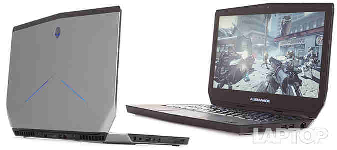
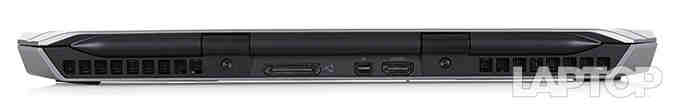
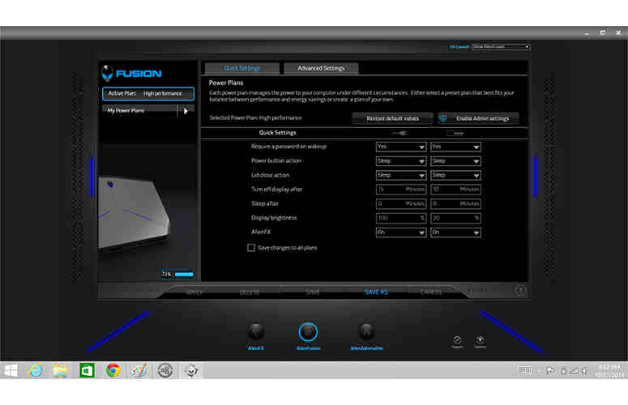

Laptop Lounge
Alienware 13

Editor's Rating:
The Pros
Strong battery life; Thin and light design; Bright, crisp touchscreen display; Comfortable keyboard; Fun, customizable lighting effects; Excellent audio quality
The Cons
Graphics performance not the best without amplifier; Amplifier does not come with GPU.
Verdict
The Alienware 13 takes PC gaming in a bold new direction, giving you a stunning display on the go and a powerful graphics accelerator for your abode.
Design
Cue up the baby talk, because the Alienware 13 is one of the most adorable gaming laptops I've had the pleasure of reviewing. But don't let the cute looks foolyou, because beneath itsdainty dimensions lies a furious beast that would put a honey badger to shame.
While it looks similar to the much larger Alienware 18 and 17, down to the gray lid accented by black soft-touch material -- it does so in a relatively tiny 4.5-pound 12.9 x 9.3 x 1.0~1.1 inch frame.
The Alienware 13's Epic Silver lid is made from plastic mixed with carbon fiber that's sturdy, yet attractive. The lid also features two slanted LEDs and a backlit alien head logo that makes this laptop undeniably Alienware.
Similar to its bigger brothers, the Alienware 13's interior features a backlit keyboard sandwiched between the glowing alien head power button and the large touchpad.
The smallest Alienware features lighting configurations similar to those of its larger brethren. However, it lacks the side-mounted lights wrapped around the front lip of the laptop, dropping the number of customizable zones from 13 to 11.
By Alienware's standards, the 13 is the thinnest of the series. However it's still on the thick side compared to the Razer Blade (2014)'s 4.4-pound, 13.6 x 9.3 x 0.7-inch chassis as well as the Lenovo Y40's 4.4-pound, 13.7 x 9.8 x 0.9-inch frame.
Alienware Command Center
Alienware's Command Center, the company's proprietary control panel, helps personalize the gaming experience. The AlienFX option is the star of the show, tricking the Alienware 13 out with custom lighting profiles.
The Fusion feature lets you create custom power profiles for the laptop while Adrenaline assists in creating a set of conditions to run for each game. This is also where you can monitor your laptop's performance or access settings for the optional Graphics Amplifier.
AlienAutopsy (diagnostics and maintenance) and AlienRefresh (system restore) have been removed from the Command Center and now live with the other apps in Windows 8.1.
Display
The Alienware 13 averaged 327 nits on our brightness test, outshining the 258-nit ultraportable average and the Y50-70's dreadful 190 nits. The Blade 14 fared somewhat better with 261 nits, but it wasn't enough to dim the Alienware's shine.
On the sRGB gamut test, which measures color reproduction, the Alienware notched 103.4 percent, topping the 77.4 percent average. The Blade 14 yielded a comparable 101.5 percent.
During the Delta-E test, which evaluates color accuracy, the Alienware 13 scored 3.7 (0 is considered perfect). It beat the 7.7 average, but was upstaged by the Y50-70 and Blade 14, which registered 2.7 and 1.5 percent respectively.
Audio
Little notebook, big speakers. It's a wonder that Alienware managed to cram its customary Klipsch speakers into such a relatively dainty frame. Buoyed by the pre-installed Creative SoundBlaster X-Fi MB3 software, the laptop blanketed my medium-size testing space in loud, crystal-clear audio.
The speakers delivered the necessary thump for Nicki Minaj's booty-shaking anthem "Anaconda." The trumpets blasted triumphantly as the rapper voraciously attacked the track. Conversely, the two-piece harmony on Meghan Trainor's "All About That Bass," were light and airy,allowing me to hear the percussion in the background while letting the aforementioned bass shine.
From the pew, pew from my Inflamator laser, to the big measured blasts from my Investment Sniper Rifle, Borderlands was a symphony of destruction. Although the explosions were nice and hefty, my favorite sound was the sharp crack from my Lawbringer's whip as she delivered justice in her own sadistic way.